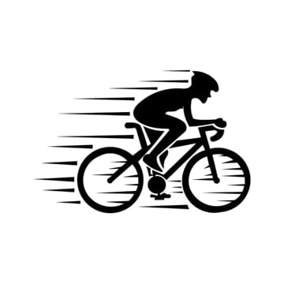

 IoT Smart Bike
Lokasi Sepeda
Monitoring Sensor
Kecepatan:
12
km/h
Suhu:
30
°C
Baterai:
85
%
Kontrol Sepeda
🔓 Buka Kunci
💡 Nyalakan Lampu
Riwayat Perjalanan
Perjalanan 1 - 5km - 20 Menit
Perjalanan 2 - 7km - 30 Menit
🚨 Peringatan: Ada kemungkinan pencurian atau benturan!